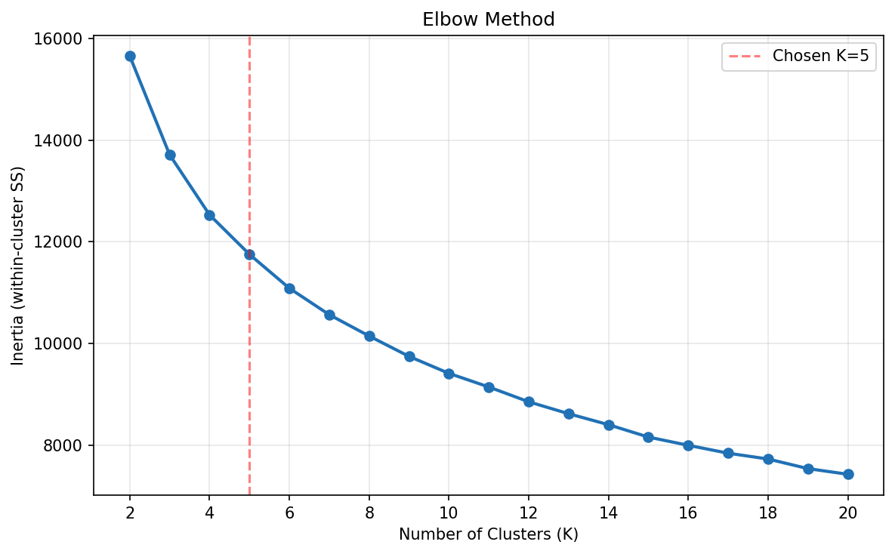

4.1 Segmentation client
À propos de la version française
Cette page est une traduction par IA de la version anglaise de Marketing Science in Python. La version anglaise fait foi et prévaut en cas de divergence. Le code, les notebooks et le texte intégré aux images restent en anglais. Lire la version anglaise
Un projet de segmentation doit produire quelque chose que l’équipe peut mettre dans une campagne. Le livrable est un segment_id directement exploitable dans votre CRM et vos plateformes publicitaires, accompagné d’une fiche synthétique pour chaque segment : qui sont ces clients, pourquoi ils comptent et quelles actions votre équipe doit entreprendre.
La segmentation n’est pas une méthode unique. Les déciles, la méthode RFM, K-Means et le regroupement fondé sur les plongements vectoriels répondent chacun à une question différente. La question découle de la décision que les segments doivent soutenir : qui reçoit le budget de fidélisation, quel message va à qui, quelle histoire de produit raconter.
Choisir la segmentation selon la question
Faites correspondre la décision à une ligne.
| Question | Méthode | Entrée | Sortie |
|---|---|---|---|
| Quels clients méritent davantage d’attention maintenant ? | Déciles / RFM | Journal des transactions | Niveaux de valeur ou scores R/F/M |
| Quels comportements existent au-delà des niveaux de valeur ? | K-Means | Variables comportementales numériques | Étiquettes de segments comportementaux |
| Qu’achètent réellement les clients ? | Regroupement fondé sur les plongements vectoriels | Documents clients issus des descriptions de produits | Segments fondés sur le sens des achats, avec signatures de mots-clés |
Il s’agit de trois angles d’analyse, et non de trois étapes d’une même chaîne de traitement. Une ligne plus bas ne raffine pas les segments d’une ligne plus haut ; elle répond à une question différente, parfois sur des données différentes. Partez de la ligne la plus simple qui changerait la décision, et ne descendez que lorsque deux clients que l’angle actuel traite de la même façon recevraient un traitement différent. Le chapitre construit les deux premières lignes sur un même distributeur alimentaire, le jeu de données Dunnhumby « The Complete Journey » (2 500 ménages sur deux ans), et la troisième sur un détaillant d’articles cadeaux dont le texte des produits s’y prête.
Le comportement d’abord, le profil ensuite
Les variables comportementales décrivent ce que font les clients : récence, fréquence, dépenses, catégories achetées, diversité des produits, retours et dépendance aux remises. Les variables de profil décrivent qui ils sont ou où les toucher : âge, revenu, composition du ménage, localisation géographique, niveau dans le programme de fidélité, préférence de canal. Construisez les segments sur le comportement : des étiquettes comme « un homme d’une trentaine d’années » ou « une personne à revenu élevé » prédisent le prochain achat bien moins bien que ce que quelqu’un a réellement acheté. Faites intervenir les variables de profil ensuite, pour décrire chaque segment et choisir où et comment le toucher.
Niveaux de valeur : déciles et RFM
La segmentation la plus rapide est un classement. L’analyse par déciles répartit les clients en dix groupes de même taille selon le chiffre d’affaires, et les données d’achats alimentaires montrent la concentration habituelle : les deux déciles supérieurs détiennent 53% du chiffre d’affaires.

Un décile indique où se situe la valeur, ce dont vous avez besoin lorsque la décision porte sur le degré d’attention à accorder à chaque client. Il ne dit rien sur les raisons pour lesquelles les clients diffèrent ni sur le message qui fonctionnera.
La méthode RFM ajoute l’engagement à la valeur, dans les termes que les équipes de marketing direct utilisent déjà : anciens gros acheteurs devenus inactifs, nouveaux acheteurs fréquents.
| Variable | Définition | Sens favorable |
|---|---|---|
| Récence (R) | Nombre de jours depuis le dernier achat du client | Plus faible = mieux |
| Fréquence (F) | Nombre d’achats pendant la période d’observation | Plus élevé = mieux |
| Montant (M) | Dépenses totales pendant la période d’observation | Plus élevé = mieux |
Attribuez à chaque variable un score par quintile et combinez-les : un gros acheteur qui a acheté hier se distingue alors d’un autre resté silencieux pendant un an. Le score combiné compte jusqu’à 125 cases ; regroupez donc les cases qui recevraient le même traitement. PyMC-Marketing, la bibliothèque utilisée dans le chapitre sur la CLV, effectue ce scoring en un seul appel avec rfm_segments().
Les déciles et la méthode RFM mesurent combien et à quelle date récente les clients achètent, pas comment. Deux clients ayant le même score RFM peuvent se comporter très différemment : l’un achète des articles au prix fort dans de nombreuses catégories, l’autre uniquement des articles remisés dans une seule catégorie.
Segments comportementaux avec K-Means
Pour séparer ces deux clients, décrivez comment ils font leurs achats. K-Means est un algorithme classique de regroupement qui reste efficace pour cela. Commencez avec 6 à 10 variables comportementales : au-delà de la récence, de la fréquence et des dépenses, ajoutez le montant moyen des commandes, la taille du panier, la diversité des catégories, la part des remises et le taux de retour. Standardisez-les avec StandardScaler pour que les dépenses ne dominent pas.
Appliquez une transformation logarithmique aux variables asymétriques avant la mise à l’échelle. Les dépenses, la fréquence, la récence et la taille du panier présentent une forte asymétrie à droite, et StandardScaler ne fait que centrer et remettre à l’échelle, de sorte que les longues queues de distribution subsistent. Alimenté par les variables brutes, K-Means consacre ses premières divisions à séparer les gros acheteurs des petits et reproduit essentiellement les niveaux de valeur. Appliquer log1p aux variables asymétriques (règle simple : transformer toute variable dont le coefficient d’asymétrie dépasse environ 1) comprime les queues de distribution, de sorte que les groupes séparent les clients selon leurs habitudes d’achat plutôt que selon leur niveau de dépenses. Sur les données d’achats alimentaires, c’est ce qui fait la différence entre un K-Means qui se réduit à trois niveaux de valeur et un K-Means qui répartit la clientèle en cinq groupes comportementaux équilibrés.
Le choix de K s’appuie à la fois sur les diagnostics et sur le jugement de l’équipe. La méthode du coude resserre la plage de valeurs mais fixe rarement le nombre, et sur les données clients son coude le plus marqué se situe souvent à K=3, ce qui ne fait que retrouver les niveaux de valeur que les déciles et RFM saisissent déjà. Poussez jusqu’à la plage utile en pratique de 4 à 8 et laissez les possibilités d’action trancher : retenez le K dont les segments seraient traités différemment par votre équipe marketing.

Sur les données d’achats alimentaires, avec K=5 les segments diffèrent par leurs habitudes d’achat et pas seulement par leur niveau de dépenses. Figure 3 est le profil qui sous-tend cet ajustement : une ligne par segment, une colonne par variable comportementale, colorée selon la moyenne du segment par rapport à la population.

Table 3 est l’interprétation par l’analyste de cette carte thermique, étape que le notebook vous laisse réaliser. Les proportions et les moyennes des profils proviennent du notebook (les dépenses, les visites et les rayons sont des totaux sur deux ans, moyennés au sein du segment) ; les noms et les actions sont ceux de l’analyste.
| Segment | Proportion | Profil | Action |
|---|---|---|---|
| Gros acheteurs fidèles | 25% | $7,300 de dépenses, 209 visites, 17 rayons | Fidélisation VIP |
| Petits paniers fréquents | 23% | $3,228 de dépenses, 157 visites, commandes de $24 | Accroître le panier |
| Gros paniers occasionnels | 22% | $1,938 de dépenses, 56 visites, commandes de $38 | Entretenir la relation à faible coût |
| Amateurs de remises | 19% | $1,087 de dépenses, 19% de part de remises, assortiment restreint | Offres uniquement avec des garde-fous sur la marge |
| Clients inactifs | 11% | $334 de dépenses, dernier achat il y a 17 semaines | Une seule relance peu coûteuse, puis arrêt |
Les noms des segments sont des raccourcis ; l’équipe marketing travaille à partir des colonnes Profil et Action. C’est ce tableau qu’il faut lui remettre pour la vérification des possibilités d’action décrite ci-dessous.
Lorsque le sens des produits compte
Les variables numériques décrivent comment les clients achètent, pas ce qu’ils achètent. Lorsque la décision porte sur le marketing par catégorie, les ventes croisées ou la création publicitaire, le signal se trouve dans les produits eux-mêmes ; il vous faut donc le texte des produits. Cette section est donc une voie distincte plutôt que l’étape qui suit K-Means, et elle s’exécute sur d’autres données. Le jeu de données UCI Online Retail II, environ un million de transactions d’un détaillant britannique d’articles cadeaux, contient les descriptions de produits en texte libre qu’un modèle de plongement vectoriel peut lire.
Traitez l’historique d’achats de chaque client comme du texte : concaténez les descriptions des produits achetés en une seule chaîne de caractères (le document client), puis utilisez un modèle de plongement vectoriel pour convertir cette chaîne en un vecteur dense. Dans cet espace vectoriel, les bougies d’anniversaire et les assiettes de fête sont séparées par une courte distance, tandis qu’une théière ancienne est éloignée des deux ; le regroupement des vecteurs réunit donc les clients selon ce qu’ils achètent plutôt que selon combien ils dépensent. Par exemple :
red retrospot cake stand, party bunting, paper cups, birthday candles, cake cases
Les variables numériques placent ce client dans un niveau d’acheteur fréquent à fortes dépenses. Le plongement vectoriel le place près des autres acheteurs d’articles de fête. Construire le document revient à regrouper et concaténer les éléments du journal des transactions :
# Keep each customer's top-N products by revenue, then join the descriptions
prod_rev = (
df.groupby(["CustomerID", "Description"])["Revenue"].sum()
.reset_index()
.sort_values(["CustomerID", "Revenue"], ascending=[True, False])
)
top_products = prod_rev.groupby("CustomerID").head(TOP_N)
customer_docs = (
top_products.groupby("CustomerID")["Description"]
.apply(lambda d: ", ".join(d))
.reset_index(name="doc")
)Conservez les principaux produits de chaque client plutôt que l’historique complet, filtrez les articles génériques comme « Postage » qui apparaissent dans tous les segments, et plafonnez le poids de tout achat coûteux isolé. Ces choix comptent davantage que le choix du modèle de plongement vectoriel.
BERTopic exécute le reste de la chaîne de traitement en un seul appel : un modèle local de plongement vectoriel de phrases convertit chaque document en vecteur, puis BERTopic regroupe les vecteurs et extrait les mots-clés distinctifs de chaque groupe.
from bertopic import BERTopic
from sentence_transformers import SentenceTransformer
embedding_model = SentenceTransformer("all-MiniLM-L6-v2") # local, lightweight
embeddings = embedding_model.encode(customer_docs["doc"].tolist())
topic_model = BERTopic(embedding_model=embedding_model)
topics, probs = topic_model.fit_transform(
customer_docs["doc"].tolist(), embeddings=embeddings
)
Figure 5 montre les sept thèmes que BERTopic a trouvés, et les mots-clés nomment directement les niches : bougies et lanternes de fête, articles de pâtisserie à pois chocolat, kits de feutrine, sacs style compagnie aérienne.

Ce que les signatures ne montrent pas, c’est la répartition de la clientèle entre elles, et sur ce catalogue c’est là le résultat. Le thème large (décoration, bougies, couronnes) regroupe 92% des clients une fois réintégrés ceux que HDBSCAN avait laissés sans affectation ; les six niches réunies en regroupent environ 8%. Le notebook divise le thème large avec K-Means en six sous-segments, mais un nouvel ajustement sur une période ultérieure ne les reproduit pas : l’indice de Rand ajusté est proche de zéro, contre environ 0,14 pour un K-Means RFM sur les mêmes clients. Neuf des douze noms attribués par un LLM sont des variations sur le même thème de la décoration intérieure. Lisez cette segmentation comme une exploration, une description de ce que le catalogue vend et à qui, et gardez le segment_id du CRM sur la segmentation comportementale.
Les mots-clés sont aussi le garde-fou contre l’attribution de noms assistée par LLM. Donnez n’importe quel groupe à un LLM, même un groupe aléatoire, et demandez-lui un nom et un persona : vous obtiendrez une description soignée et convaincante. Deux garde-fous :
- Lisez les principaux mots-clés avant la description du LLM. Si vous ne pouvez pas vous-même discerner un thème clair, le nom n’est pas étayé par les données.
- Testez les noms auprès de l’équipe marketing. Si deux segments recevraient la même campagne, les séparer n’apporte guère de valeur pour cette décision.
Votre segmentation est-elle de bonne qualité ?
Vérifiez trois choses, dans cet ordre : les possibilités d’action, la stabilité et la taille.
Les possibilités d’action comptent le plus. Présentez les profils des segments à votre équipe marketing et, pour chaque paire de segments, demandez si elle utiliserait un message, un canal, une offre ou une fréquence différents. Si ce n’est pas le cas, la segmentation ne permet pas d’agir, aussi bons que soient ses indicateurs de regroupement. La cause habituelle est un segment moyen sur tous les critères ; fusionnez-le avec un segment voisin ou revoyez votre sélection de variables.
La deuxième vérification est la stabilité. Relancez la segmentation sur deux périodes sans chevauchement et vérifiez que les clients se retrouvent majoritairement dans les mêmes segments ; l’indice de Rand ajusté (ARI) quantifie cela. Sur les données d’achats alimentaires, le notebook vérifie le classement par valeur plutôt que les groupes : il place les ménages dans des quintiles de chiffre d’affaires chaque année et suit leurs déplacements.

Les quintiles supérieur et inférieur restent pour l’essentiel en place (70% et 61%), tandis que les trois quintiles intermédiaires ne conservent qu’environ 40% de leurs clients ; une campagne fondée sur le milieu de la clientèle a donc besoin de la plus grande marge de manœuvre. Cela indique à quel point le classement par valeur est stable, pas à quel point les cinq segments le sont. Réajuster le K-Means sur une seconde période est la vérification à effectuer avant que le segment_id ne pilote une campagne.
La troisième vérification est la taille. Chaque segment doit être assez grand pour permettre une action, mais il n’existe pas de seuil universel. Pour un ciblage large, cela signifie souvent environ 10 pour cent de la clientèle ; une niche réellement à forte valeur peut constituer une exception délibérée.
Des segments à un segment_id
Ce qui sort du projet, c’est une ligne par client. Le notebook associé écrit 2 500 lignes dans segment_assignments.csv, dont trois figurent ci-dessous, et le chapitre sur la CLV joint ce fichier pour attribuer une valeur à chaque segment.
| household_key | decile | km_segment | Segment |
|---|---|---|---|
| 1 | D3 | 0 | Petits paniers fréquents |
| 2 | D6 | 3 | Gros paniers occasionnels |
| 3 | D5 | 4 | Amateurs de remises |
Conservez la fiche de chaque segment à côté du fichier et versionnez le fichier : une appartenance qui change silencieusement d’une campagne à l’autre est pire que l’absence de segmentation. Les segments décrivent des différences entre clients ; ils ne montrent pas qu’un message fonctionne pour l’un d’eux. Une fois le traitement choisi, testez-le : les méthodes de la conception des tests A/B s’appliquent aux campagnes par segment autant qu’à toute autre.
Notebooks associés : sec4.1_traditional_segmentation.ipynb reproduit les déciles, RFM, K-Means et l’export sur les données Dunnhumby. Voir sur GitHub
sec4.1_semantic_segmentation.ipynb reproduit les documents clients, l’ajustement BERTopic, la vérification de stabilité et l’attribution de noms par LLM sur UCI Online Retail II. Voir sur GitHub
Points clés à retenir
- Choisissez la segmentation selon la décision qu’elle sert. Les déciles et RFM classent la valeur, K-Means trouve des groupes comportementaux et les plongements vectoriels saisissent ce que les clients achètent ; une méthode plus bas dans le tableau répond à une question différente et ne raffine pas les segments de la précédente.
- Construisez les segments à partir des comportements et validez d’abord les possibilités d’action, puis la stabilité et la taille. Si deux segments recevraient la même campagne, fusionnez-les.
- Un LLM produira un nom convaincant pour n’importe quel groupe, y compris un groupe aléatoire ; lisez donc vous-même les principaux mots-clés avant de vous fier à l’étiquette.